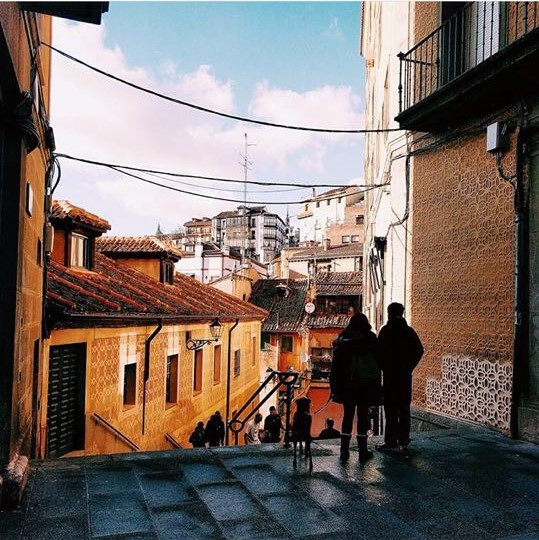

Kyiv shots behind beautiful scen.
Play with shadow.
The city awakes.
Walk with neon fire.
Church in the Spain
The Canary Islands also known as The Canaries (Spanish: Las Canarias), are an archipelago and autonomous community of Spain located on the Atlantic Ocean, 100 kilometres (62 miles) west of Morocco. The Canaries are among the outermost regions (OMR) of the European Union proper. It is also one of the eight regions with special consideration of historical nationality recognized as such by the Spanish Government.
Toledo (Spanish: [toˈleðo]) is a city and municipality located in central Spain; it is the capital of the province of Toledo and the autonomous community of Castile–La Mancha. Toledo was declared a World Heritage Site by UNESCO in 1986 for its extensive monumental and cultural heritage.
Warsaw (Polish: Warszawa [varˈʂava] (About this sound listen); see also other names) is the capital and largest city of Poland. It stands on the Vistula River in east-central Poland, roughly 260 kilometres (160 mi) from the Baltic Sea and 300 kilometres (190 mi) from the Carpathian Mountains. Its population is officially estimated at 1.750 million residents within a greater metropolitan area of 3.101 million residents,[3] which makes Warsaw the 9th most-populous capital city in the European Union. The city limits cover 516.9 square kilometres (199.6 sq mi), while the metropolitan area covers 6,100.43 square kilometres (2,355.39 sq mi).